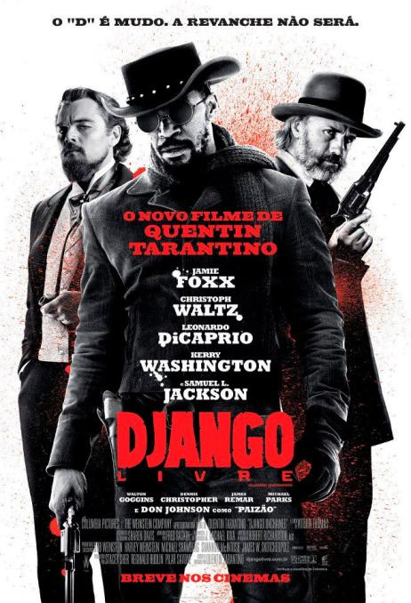

Django Livre
Diretor: Quentin Tarantino
Com: Jamie Foxx, Christoph Waltz, Leonardo DiCaprio
Censura:16 anos
Tempo de duração: 165 min
Sinopse: Django (Jamie Foxx) é um escravo liberto cujo passado brutal com seus antigos proprietários leva-o ao encontro do caçador de recompensas alemão Dr. King Schultz (Christoph Waltz). Schultz está em busca dos irmãos assassinos Brittle, e somente Django pode levá-lo a eles. O pouco ortodoxo Schultz compra Django com a promessa de libertá-lo quando tiver capturado os irmãos Brittle, vivos ou mortos.
Ao realizar seu plano, Schultz libera Django, embora os dois homens decidam continuar juntos. Desta vez, Schultz busca os criminosos mais perigosos do sul dos Estados Unidos com a ajuda de Django. Dotado de um notável talento de caçador, Django tem como objetivo principal encontrar e resgatar Broomhilda (Kerry Washington), sua esposa, que ele não vê desde que ela foi adquirida por outros proprietários, há muitos anos.
A busca de Django e Schultz leva-os a Calvin Candie (Leonardo DiCaprio), o dono de "Candyland", uma plantação famosa pelo treinador Ace Woody, que treina os escravos locais para a luta. Ao explorarem o local com identidades falsas, Django e Schultz chamam a atenção de Stephen (Samuel L. Jackson), o escravo de confiança de Candie. Os movimentos dos dois começam a ser traçados, e logo uma perigosa organização fecha o cerco em torno de ambos. Para Django e Schultz conseguirem escapar com Broomhilda, eles terão que escolher entre independência e solidariedade, sacrifício e sobrevivência.